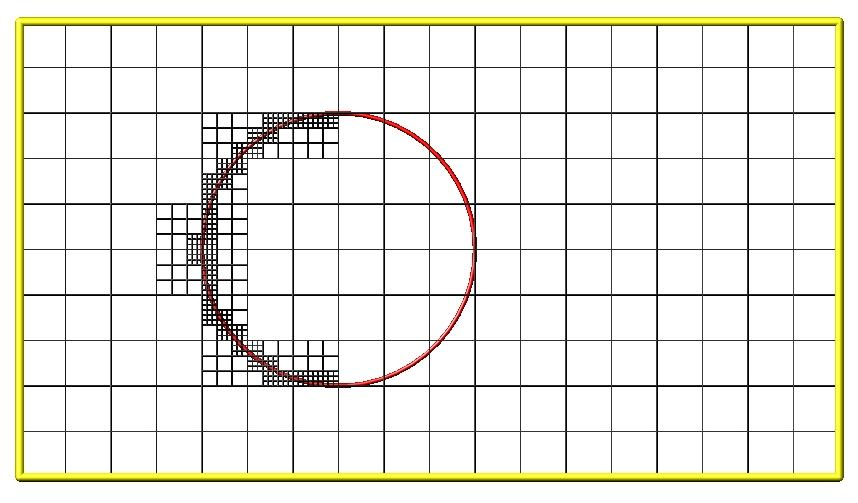
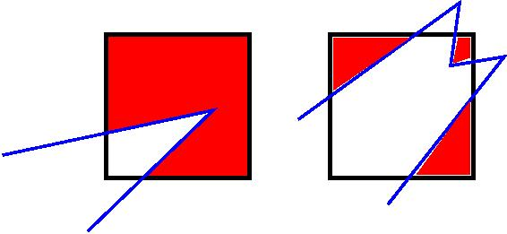
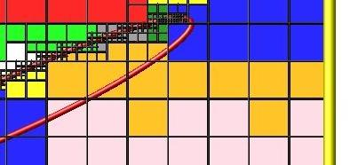

6. How-to discussions
The following sections describe how to perform common tasks using SPARTA, as well as provide some techinical details about how SPARTA works.
The example input scripts included in the SPARTA distribution and highlighted in Section 5 of the manual also show how to setup and run various kinds of simulations.
6.1 2d simulations
In SPARTA, as in other DSMC codes, a 2d simulation means that particles move only in the xy plane, but still have all 3 xyz components of velocity. Only the xy components of velocity are used to advect the particles, so that they stay in the xy plane, but all 3 components are used to compute collision parameters, temperatures, etc. Here are the steps to take in an input script to setup a 2d model.
Use the dimension command to specify a 2d simulation.
Make the simulation box periodic in z via the boundary command. This is the default.
Using the create box command, set the z boundaries of the box to values that straddle the z = 0.0 plane. I.e. zlo < 0.0 and zhi > 0.0. Typical values are -0.5 and 0.5, but regardless of the actual values, SPARTA computes the "volume" of 2d grid cells as if their z-dimension length is 1.0, in whatever units are defined. This volume is used with the global nrho setting to calculate numbers of particles to create or insert. It is also used to compute collision frequencies.
If surfaces are defined via the read_surf command, use 2d objects defined by line segements.
Many of the example input scripts included in the SPARTA distribution are for 2d models.
6.2 Axisymmetric simulations
In SPARTA, an axi-symmetric model is a 2d model. An example input script is provided in the examples/axisymm directory.
An axi-symmetric problem can be setup using the following commands:
Set dimension = 2 via the dimension command.
Set the y-dimension lower boundary to "a" via the boundary command.
The y-dimension upper boundary can be anything except "a" or "p" for periodic.
Use the create_box command to define a 2d simulation box with ylo = 0.0.
If desired, grid cell weighting can be enabled via the global weight command. The volume or radial setting can be used for axi-symmetric models.
Grid cell weighting affects how many particles per grid cell are created when using the create_particles and fix emit command variants.
During a run, it also triggers particle cloning and destruction as particles move from grid cell to grid cell. This can be important for inducing every grid cell to contain roughly the same number of particles, even if cells are of varying volume, as they often are in axi-symmetric models. Note that the effective volume of an axi-symmetric grid cell is the volume its 2d area sweeps out when rotated around the y=0 axis of symmetry.
6.3 Running multiple simulations from one input script
This can be done in several ways. See the documentation for individual commands for more details on how these examples work.
If "multiple simulations" means continue a previous simulation for more timesteps, then you simply use the run command multiple times. For example, this script
read_grid data.grid
create_particles 1000000
run 10000
run 10000
run 10000
run 10000
run 10000
would run 5 successive simulations of the same system for a total of 50,000 timesteps.
If you wish to run totally different simulations, one after the other, the clear command can be used in between them to re-initialize SPARTA. For example, this script
read_grid data.grid
create_particles 1000000
run 10000
clear
read_grid data.grid2
create_particles 500000
run 10000
would run 2 independent simulations, one after the other.
For large numbers of independent simulations, you can use variables and the next and jump commands to loop over the same input script multiple times with different settings. For example, this script, named in.flow
variable d index run1 run2 run3 run4 run5 run6 run7 run8
shell cd $d
read_grid data.grid
create_particles 1000000
run 10000
shell cd ..
clear
next d
jump in.flow
would run 8 simulations in different directories, using a data.grid file in each directory. The same concept could be used to run the same system at 8 different gas densities, using a density variable and storing the output in different log and dump files, for example
variable a loop 8
variable rho index 1.0e18 4.0e18 1.0e19 4.0e19 1.0e20 4.0e20 1.0e21 4.0e21
log log.$a
read data.grid
global nrho ${rho}
...
compute myGrid grid all all n temp
dump 1 grid all 1000 dump.$a id c_myGrid
run 100000
clear
next rho
next a
jump in.flow
All of the above examples work whether you are running on 1 or multiple processors, but assumed you are running SPARTA on a single partition of processors. SPARTA can be run on multiple partitions via the "-partition" command-line switch as described in Section 2.5 of the manual.
In the last 2 examples, if SPARTA were run on 3 partitions, the same scripts could be used if the "index" and "loop" variables were replaced with universe-style variables, as described in the variable command. Also, the "next rho" and "next a" commands would need to be replaced with a single "next a rho" command. With these modifications, the 8 simulations of each script would run on the 3 partitions one after the other until all were finished. Initially, 3 simulations would be started simultaneously, one on each partition. When one finished, that partition would then start the 4th simulation, and so forth, until all 8 were completed.
6.4 Output from SPARTA (stats, dumps, computes, fixes, variables)
There are four basic kinds of SPARTA output:
Statistical output, which is a list of quantities printed every few timesteps to the screen and logfile.
Dump files, which contain snapshots of particle, grid cell, or surface element quantities and are written at a specified frequency.
Certain fixes can output user-specified quantities directly to files: fix ave/time for time averaging, and fix print for single-line output of variables. Fix print can also output to the screen.
A simulation prints one set of statistical output and (optionally) restart files. It can generate any number of dump files and fix output files, depending on what dump and fix commands you specify.
As discussed below, SPARTA gives you a variety of ways to determine what quantities are computed and printed when the statistics, dump, or fix commands listed above perform output. Throughout this discussion, note that users can also add their own computes and fixes to SPARTA (see Section 10) which can generate values that can then be output with these commands.
The following sub-sections discuss different SPARTA commands related to output and the kind of data they operate on and produce:
Global/per-particle/per-grid/per-surf/pre-tally data
Various output-related commands work with four different styles of data: global, per particle, per grid, or per surf. A global datum is one or more system-wide values, e.g. the temperature of the system. A per particle datum is one or more values per partice, e.g. the kinetic energy of each particle. A per grid datum is one or more values per grid cell, e.g. the temperature of the particles in the grid cell. A per surf datum is one or more values per surface element, e.g. the count of particles that collided with the surface element. A per-tally datum is one or more values per event, e.g. a particle colliding or reacting with a surface element.
Scalar/vector/array data
Global, per particle, per grid, per surf, and per tally datums can each come in two kinds: a single scalar value, a vector of values. Additionally, global quantities can also be a 2d array of values. The doc page for a "compute" or "fix" or "variable" that generates data will specify both the style and kind of data it produces, e.g. a per-particle vector. Some computes can produce more than one form of a single style, e.g. a global scalar and a global vector.
When a quantity is accessed, as in many of the output commands discussed below, it can be referenced via the following bracket notation, where ID in this case is the ID of a compute. The leading "c_" would be replaced by "f_" for a fix, or "v_" for a variable:
c_ID |
entire scalar, vector, or array |
c_ID[I] |
one element of vector, one column of array |
c_ID[I][J] |
one element of array |
In other words, using one bracket reduces the dimension of the data once (vector -> scalar, array -> vector). Using two brackets reduces the dimension twice (array -> scalar). Thus a command that uses scalar values as input can typically also process elements of a vector or array.
Statistical output
The frequency and format of statistical output is set by the stats, stats_style, and stats_modify commands. The stats_style command also specifies what values are calculated and written out. Pre-defined keywords can be specified (e.g. np, ncoll, etc). Three additional kinds of keywords can also be specified (c_ID, f_ID, v_name), where a compute or fix or variable provides the value to be output. In each case, the compute, fix, or variable must generate global values to be used as an argument of the stats_style command.
Dump file output
Dump file output is specified by the dump and dump_modify commands. There are several pre-defined formats: dump particle, dump grid, dump surf, dump tally, etc.
Each of these allows specification of what values are output with each particle, grid cell, or surface element. Pre-defined attributes can be specified (e.g. id, x, y, z for particles or id, vol for grid cells, etc). Three additional kinds of keywords can also be specified (c_ID, f_ID, v_name), where a compute or fix or variable provides the values to be output. In each case, the compute, fix, or variable must generate per particle, per grid, or per surf values for input to the corresponding dump command.
Fixes that write output files
Two fixes take various quantities as input and can write output files: fix ave/time and fix print.
The fix ave/time command enables direct output to a file and/or time-averaging of global scalars or vectors. The user specifies one or more quantities as input. These can be global compute values, global fix values, or variables of any style except the particle style which does not produce single values. Since a variable can refer to keywords used by the stats_style command (like particle count), a wide variety of quantities can be time averaged and/or output in this way. If the inputs are one or more scalar values, then the fix generates a global scalar or vector of output. If the inputs are one or more vector values, then the fix generates a global vector or array of output. The time-averaged output of this fix can also be used as input to other output commands.
The fix print command can generate a line of output written to the screen and log file or to a separate file, periodically during a running simulation. The line can contain one or more variable values for any style variable except the particle style. As explained above, variables themselves can contain references to global values generated by stats keywords, computes, fixes, or other variables. Thus the fix print command is a means to output a wide variety of quantities separate from normal statistical or dump file output.
Computes that process output quantities
The compute reduce command takes one or more per particle or per grid or per surf vector quantities as inputs and "reduces" them (sum, min, max, ave) to scalar quantities. These are produced as output values which can be used as input to other output commands.
Computes that generate values to output
Every compute in SPARTA produces either global or per particle or per grid or per surf values. The values can be scalars or vectors or arrays of data. These values can be output using the other commands described in this section. The doc page for each compute command describes what it produces. Computes that produce per particle or per grid or per surf values have the word "particle" or "grid" or "surf" in their style name. Computes without those words produce global values.
Fixes that generate values to output
Some fixes in SPARTA produces either global or per particle or per grid or per surf values which can be accessed by other commands. The values can be scalars or vectors or arrays of data. These values can be output using the other commands described in this section. The doc page for each fix command tells whether it produces any output quantities and describes them.
Two fixes of particular interest for output are the fix ave/grid and fix ave/surf commands.
The fix ave/grid command enables time-averaging of per grid vectors. The user specifies one or more quantities as input. These can be per grid vectors or ararys from compute or fix commands. If the input is a single vector, then the fix generates a per grid vector. If the input is multiple vectors or array, the fix generates a per grid array. The time-averaged output of this fix can also be used as input to other output commands.
The fix ave/surf command enables time-averaging of per surf vectors. The user specifies one or more quantities as input. These can be per surf vectors or ararys from compute or fix commands. If the input is a single vector, then the fix generates a per surf vector. If the input is multiple vectors or array, the fix generates a per surf array. The time-averaged output of this fix can also be used as input to other output commands.
Variables that generate values to output
Variables defined in an input script generate either a global scalar value or a per particle vector (only particle-style variables) when it is accessed. The formulas used to define equal- and particle-style variables can contain references to the stats_style keywords and to global and per particle data generated by computes, fixes, and other variables. The values generated by variables can be output using the other commands described in this section.
Summary table of output options and data flow between commands
This table summarizes the various commands that can be used for generating output from SPARTA. Each command produces output data of some kind and/or writes data to a file. Most of the commands can take data from other commands as input. Thus you can link many of these commands together in pipeline form, where data produced by one command is used as input to another command and eventually written to the screen or to a file. Note that to hook two commands together the output and input data types must match, e.g. global/per atom/local data and scalar/vector/array data.
Also note that, as described above, when a command takes a scalar as input, that could be an element of a vector or array. Likewise a vector input could be a column of an array.
Command |
Input |
Output |
|
global scalars |
screen, log file |
||
per particle vectors |
dump file |
||
per grid vectors |
dump file |
||
per surf vectors |
dump file |
||
per tally vectors |
dump file |
||
global scalar from variable |
screen, file |
||
global scalar from variable |
screen |
||
N/A |
global or per particle/grid/surf/tally scalar/vector/array |
||
N/A |
global or per particle/grid/surf scalar/vector/array |
||
global scalars, per particle vectors |
global scalar, per particle vector |
||
per particle/grid/surf vectors |
global scalar/vector |
||
global scalars/vectors |
global scalar/vector/array, file |
||
per grid vectors/arrays |
per grid vector/array |
||
per surf vectors/arrays |
per surf vector/array |
||
6.5 Visualizing SPARTA snapshots
The dump image command can be used to do on-the-fly visualization as a simulation proceeds. It works by creating a series of JPG or PNG or PPM files on specified timesteps, as well as movies. The images can include particles, grid cell quantities, and/or surface element quantities. This is not a substitute for using an interactive visualization package in post-processing mode, but on-the-fly visualization can be useful for debugging or making a high-quality image of a particular snapshot of the simulation.
The dump command can be used to create snapshots of particle, grid cell, or surface element data as a simulation runs. These can be post-processed and read in to other visualization packages.
A Python-based toolkit distributed by our group can read SPARTA particle dump files with columns of user-specified particle information, and convert them to various formats or pipe them into visualization software directly. See the Pizza.py WWW site for details. Specifically, Pizza.py can convert SPARTA particle dump files into PDB, XYZ, Ensight, and VTK formats. Pizza.py can pipe SPARTA dump files directly into the Raster3d and RasMol visualization programs. Pizza.py has tools that do interactive 3d OpenGL visualization and one that creates SVG images of dump file snapshots.
Additional Pizza.py tools may be added that allow visualization of surface and grid cell information as output by SPARTA.
6.6 Library interface to SPARTA
As described in Section 2.4, SPARTA can be built as a library, so that it can be called by another code, used in a coupled manner with other codes, or driven through a Python interface.
All of these methodologies use a C-style interface to SPARTA that is provided in the files src/library.cpp and src/library.h. The functions therein have a C-style argument list, but contain C++ code you could write yourself in a C++ application that was invoking SPARTA directly. The C++ code in the functions illustrates how to invoke internal SPARTA operations. Note that SPARTA classes are defined within a SPARTA namespace (SPARTA_NS) if you use them from another C++ application.
Library.cpp provides these core functions:
void sparta_open(int, char **, MPI_Comm, void **); void sparta_close(void *); void sparta_file(void *, char *); char *sparta_command(void *, char *);
The sparta_open() function is used to initialize SPARTA, passing in a list of strings as if they were command-line arguments when SPARTA is run in stand-alone mode from the command line, and a MPI communicator for SPARTA to run under. It returns a ptr to the SPARTA object that is created, and which is used in subsequent library calls. The sparta_open() function can be called multiple times, to create multiple instances of SPARTA.
SPARTA will run on the set of processors in the communicator. This means the calling code can run SPARTA on all or a subset of processors. For example, a wrapper script might decide to alternate between SPARTA and another code, allowing them both to run on all the processors. Or it might allocate half the processors to SPARTA and half to the other code and run both codes simultaneously before syncing them up periodically. Or it might instantiate multiple instances of SPARTA to perform different calculations.
The sparta_close() function is used to shut down an instance of SPARTA and free all its memory.
The sparta_file() and sparta_command() functions are used to pass a file or string to SPARTA as if it were an input script or single command in an input script. Thus the calling code can read or generate a series of SPARTA commands one line at a time and pass it thru the library interface to setup a problem and then run it, interleaving the sparta_command() calls with other calls to extract information from SPARTA, perform its own operations, or call another code's library.
Beyond these, library.cpp provides many additional functions so a driver program can run SPARTA, read its output, handle errors, and introspect its build. Briefly, these include: functions to execute a multi-line command string (sparta_commands_string) and to query or interrupt a run (sparta_is_running, sparta_force_timeout); functions to read thermodynamic output, both live (sparta_get_thermo) and from a cached snapshot of the most recent output that can be read while a run is in progress (sparta_last_thermo); error-handling functions that let a driver recover from an error instead of aborting the process, when SPARTA is built with exceptions (sparta_has_error, sparta_get_last_error_message); data-extraction functions for global quantities and settings such as box bounds, units, the version, the git commit and branch, and per-surface counts (sparta_extract_global, sparta_extract_setting) and for per-particle, per-grid, per-surface or global data produced by a compute or fix (sparta_extract_compute, sparta_extract_fix, sparta_extract_variable); introspection functions to enumerate the styles compiled into the executable (sparta_style_count, sparta_style_name) and the currently defined computes, fixes, dumps, regions, variables, mixtures and surface collision/reaction models (sparta_id_count, sparta_id_name); and build-configuration queries (sparta_version, sparta_config_has_package, sparta_config_accelerator, and the sparta_config_has_*_support functions for MPI, PNG, JPEG, FFmpeg and gzip support). See the library.cpp file and its associated header file library.h for the full list and exact signatures.
The sparta_extract_setting() function takes a keyword and returns an integer setting of the SPARTA executable or of the running simulation. It returns -1 for a keyword it does not recognize; no setting it does recognize is negative. The keywords are grouped by what they describe:
Integer sizes:
bigint = size in bytes of a bigint, the type SPARTA counts timesteps and particles with
System status:
dimension = 2 or 3, as set by the dimension command
box_exist = 1 after create_box, else 0
grid_exist = 1 after the grid is defined, else 0
surf_exist = 1 if surface elements are defined, else 0
Communication status:
world_size = # of MPI ranks on SPARTA's world communicator
world_rank = MPI rank of this processor on that communicator, 0 <= world_rank < world_size
universe_size = # of MPI ranks on SPARTA's universe communicator, world_size <= universe_size
universe_rank = MPI rank of this processor on that communicator
System sizes:
nplocal = # of particles owned by this processor
nspecies = # of species defined
nmixture = # of mixtures defined
nsurf = # of surface elements, global
nlocal_surf = # of surface elements owned by this processor
ngroup_grid = # of grid groups defined
ngroup_surf = # of surface groups defined
Defined commands:
ncompute = # of computes defined
nfix = # of fixes defined
ndump = # of dumps defined
nregion = # of regions defined
nvariable = # of variables defined
Output settings:
stats_every = N from the stats command
world_size and world_rank are for the partition this processor belongs to, so they differ from universe_size and universe_rank only under the -partition command-line switch. All of these are read locally, so calling this function is not collective and ranks may call it independently.
An input script can read the same settings without a driver program, through the extract_setting(name) special function of the variable command, which calls this function.
Other functions may be added to the library interface as needed to allow reading from or writing to internal SPARTA data structures.
The key idea of the library interface is that you can write any functions you wish to define how your code talks to SPARTA and add them to src/library.cpp and src/library.h, as well as to the Python interface. The routines you add can in principle access or change any SPARTA data you wish. The examples/COUPLE and python directories have example C++ and C and Python codes which show how a driver code can link to SPARTA as a library, run SPARTA on a subset of processors, grab data from SPARTA, change it, and put it back into SPARTA.
IMPORTANT NOTE: The examples/COUPLE dir has not been added to the distribution yet.
6.7 Coupling SPARTA to other codes
SPARTA is designed to allow it to be coupled to other codes. For example, a continuum finite element (FE) simulation might use SPARTA grid cell quantities as boundary conditions on FE nodal points, compute a FE solution, and return continuum flow conditions as boundary conditions for SPARTA to use.
SPARTA can be coupled to other codes in at least 3 ways. Each has advantages and disadvantages, which you'll have to think about in the context of your application.
(1) Define a new fix command that calls the other code. In this scenario, SPARTA is the driver code. During its timestepping, the fix is invoked, and can make library calls to the other code, which has been linked to SPARTA as a library. See Section 8 of the documentation for info on how to add a new fix to SPARTA.
(2) Define a new SPARTA command that calls the other code. This is conceptually similar to method (1), but in this case SPARTA and the other code are on a more equal footing. Note that now the other code is not called during the timestepping of a SPARTA run, but between runs. The SPARTA input script can be used to alternate SPARTA runs with calls to the other code, invoked via the new command. The run command facilitates this with its every option, which makes it easy to run a few steps, invoke the command, run a few steps, invoke the command, etc.
In this scenario, the other code can be called as a library, as in (1), or it could be a stand-alone code, invoked by a system() call made by the command (assuming your parallel machine allows one or more processors to start up another program). In the latter case the stand-alone code could communicate with SPARTA thru files that the command writes and reads.
See Section_modify of the documentation for how to add a new command to SPARTA.
(3) Use SPARTA as a library called by another code. In this case the other code is the driver and calls SPARTA as needed. Or a wrapper code could link and call both SPARTA and another code as libraries. Again, the run command has options that allow it to be invoked with minimal overhead (no setup or clean-up) if you wish to do multiple short runs, driven by another program.
Examples of driver codes that call SPARTA as a library are included in the examples/COUPLE directory of the SPARTA distribution; see examples/COUPLE/README for more details.
IMPORTANT NOTE: The examples/COUPLE dir has not been added to the distribution yet.
Section 2.3 of the manual describes how to build SPARTA as a library. Once this is done, you can interface with SPARTA either via C++, C, Fortran, or Python (or any other language that supports a vanilla C-like interface). For example, from C++ you could create one (or more) "instances" of SPARTA, pass it an input script to process, or execute individual commands, all by invoking the correct class methods in SPARTA. From C or Fortran you can make function calls to do the same things. See Section_9 of the manual for a description of the Python wrapper provided with SPARTA that operates through the SPARTA library interface.
The files src/library.cpp and library.h contain the C-style interface to SPARTA. See Section 6.6 of the manual for a description of the interface and how to extend it for your needs.
Note that the sparta_open() function that creates an instance of SPARTA takes an MPI communicator as an argument. This means that instance of SPARTA will run on the set of processors in the communicator. Thus the calling code can run SPARTA on all or a subset of processors. For example, a wrapper script might decide to alternate between SPARTA and another code, allowing them both to run on all the processors. Or it might allocate half the processors to SPARTA and half to the other code and run both codes simultaneously before syncing them up periodically. Or it might instantiate multiple instances of SPARTA to perform different calculations.
6.8 Details of grid geometry in SPARTA
SPARTA overlays a grid over the simulation domain which is used to track particles and to co-locate particles in the same grid cell for performing collision and chemistry operations. Surface elements are also assigned to grid cells they intersect with, so that particle/surface collisions can be efficiently computed.
SPARTA uses a Cartesian hierarchical grid. Cartesian means that the faces of a grid cell, at any level of the hierarchy, are aligned with the Cartesian xyz axes. I.e. each grid cell is an axis-aligned pallelpiped or rectangular box.
The hierarchy of grid cells is defined for N levels, from 1 to N. The entire simulation box is a single parent grid cell, conceptually at level 0. It is subdivided into a regular grid of Nx by Ny by Nz cells at level 1. "Regular" means all the Nx*Ny*Nz sub-divided cells within any parent cell are the same size. Each of those cells can be a child cell (no further sub-division) or it can be a parent cell which is further subdivided into Nx by Ny by Nz cells at level 2. This can recurse to as many levels as desired. Different cells can stop recursing at different levels. The Nx,Ny,Nz values for each level of the grid can be different, but they are the same for every grid cell at the same level. The per-level Nx,Ny,Nz values are defined by the create_grid, read_grid, adapt_grid, or fix_adapt commands.
As described below, each child cell is assigned an ID which encodes the cell's logical position within in the hierarchical grid, as a 32-bit or 64-bit unsigned integer ID. The precision is set by the -DSPARTA_BIG or -DSPARTA_SMALL or -DSPARTA_BIGBIG compiler switch, as described in Section 2.2. The number of grid levels that can be used depends on this precision and the resolution of the grid at each level. For example, in a 3d simulation, a level that is refined with a 2x2x2 sub-grid requires 4 bits of the ID. Thus a maximum of 8 levels can be used for 32-bit IDs and 16 levels for 64-bit IDs.
This manner of defining a hierarchical grid allows for flexible grid cell refinement in any region of the simulation domain. E.g. around a surface, or in a high-density region of the gas flow. Also note that a 3d oct-tree (quad-tree in 2d) is a special case of the SPARTA hierarchical grid, where Nx = Ny = Nz = 2 is used at every level.
An example 2d hierarchical grid is shown in the diagram, for a circular surface object (in red) with the grid refined on the upwind side of the object (flow from left to right). The first level coarse grid is 18x10. 2nd level grid cells are defined in a subset of those cells with a 3x3 sub-division. A subset of the 2nd level cells contain 3rd level grid cells via a further 3x3 sub-division.

In the rest of the SPARTA manual, the following terminology is used to refer to the cells of the hierarchical grid. The flow region is the portion of the simulation domain that is "outside" any surface objects and is typically filled with particles.
root cell = the overall simulation box
parent cell = a grid cell that is sub-divided (the root cell is a parent cell)
child cell = a grid cell that is not sub-divided further
unsplit cell = a child cell not intersected by any surface elements
cut cell = a child cell intersected by one or more surface elements, resulting in a single flow region
split cell = a child cell intersected by two or more surface elements, resulting in two or more disjoint flow regions
sub cell = one disjoint flow region portion of a split cell
Note that in SPARTA, parent cells are only conceptual. They do not exist as individual entities or require memory. Child cells store various attributes and are distributed across processors, so that each child cell is owned by exactly one processor, as discussed below.
When surface objects are defined via the read_surf command, they intersect child cells. In this contex "intersection" by a surface element means a geometric overlap between the area of the surface element and the volume of the grid cell (or length of element and area of grid cell in 2d). Thus an intersection includes a surface triangle that only touches a grid cell on its face, edge, or at its corner point. When intersected by one or more surface elements, a child cell becomes one of 3 flavors: unsplit, cut, or split. A child cell not intersected by any surface elements is an unsplit cell. It can be entirely in the flow region or entirely inside a surface object. If a child cell is intersected so that it is partitioned into two contiguous volumes, one in the flow region, the other inside a surface object, then it is a cut cell. This is the usual case. Note that either the flow volume or inside volume can be of size zero, if the surface only "touches" the grid cell, i.e. the intersection is only on a face, edge, or corner point of the grid cell. The left side of the diagram below is an example, where red represents the flow region. Sometimes a child cell can be partitioned by surface elements so that more than one contiguous flow region is created. Then it is a split cell. Additionally, each of the two or more contiguous flow regions is a sub cell of the split cell. The right side of the diagram shows a split cell with 3 sub cells.

The union of (1) unsplit cells that are in the flow region (not entirely interior to a surface object) and (2) flow region portions of cut cells and (3) sub cells is the entire flow region of the simulation domain. These are the only kinds of child cells that store particles. Split cells and unsplit cells interior to surface objects have no particles.
Child cell IDs can be output in integer or string form by the dump grid command, using its id and idstr attributes. The integer form can also be output by the compute property/grid.
Here is how a grid cell ID is computed by SPARTA, either for parent or child cells. Say the level 1 grid is a 10x10x20 sub-division (2000 cells) of the root cell (simulation box). The level 1 cells are numbered from 1 to 2000 with the x-dimension varying fastest, then y, and finally the z-dimension slowest. Consider the 376th level 1 cell. It would be the 6th cell in the x direction of the grid, 8th cell in y, and 4th cell in z. I.e. 376 = (z-1)*100 + (y-1)*10 + (x-1) + 1. Now consider the case where level 2 cells use a 2x2x2 sub-division (8 cells) of level 1 cells and consider the 4th level 2 cell within the 376th level 1 cell. This would be the 2nd cell in x, 2nd cell in y, and 1st cell in z. I.e. 4 = (z-1)*4 + (y-1)*2 + (x-1) + 1.
This level 2 cell could itself be a parent cell if it were further sub-divided, or a child cell if not. In either case its ID is the same and is calcluated as follows. The rightmost 11 bits of the integer ID are encoded with 376. This is because it requires 11 bits to represent 2000 cells (1 to 2000) at level 1. The next 4 bits are encoded with 4, because it requires 4 bits to represent 8 cells (1 to 8) at level 2. Thus the level 2 cell ID in integer format is 4*2048 + 376 = 8568. In string format it would be 376-4, with dashes separating each of the levels. Either of these formats (integer or string) can be specified as id or idstr for output of grid cell info with the dump grid command; see its doc page for more details.
Note that a child cell has the same ID whether it is unsplit, cut, or split. Currently, sub cells of a split cell also have the same ID, though that may change in the future.
The create_grid and balance_grid and fix balance commands determine the assignment of child cells to processors. If a child cell is assigned to a processor, that processor owns the cell whether it is an unsplit, cut, or split cell. It also owns any sub cells that are part of a split cell.
Depending on which assignment options in these commands are used, the child cells assigned to each processor will either be "clumped" or "dispersed".
Clumped means each processor's cells will be geometrically compact. Dispersed means the processor's cells will be geometrically dispersed across the simulation domain and so they cannot be enclosed in a small bounding box.
An example of a clumped assignment is shown in this zoom-in of a 2d hierarchical grid with 5 levels, refined around a tilted ellipsoidal surface object (outlined in pink). One processor owns the grid cells colored orange. A compact bounding rectangle can be drawn around the orange cells which will contain only a few grid cells owned by other processors. By contrast a dispersed assignment could scatter orange grid cells throughout the entire simulation domain.

It is important to understand the difference between the two kinds of assignments and the effects they can have on performance of a simulation. For example the create_grid and read_grid commands may produce dispersed assignments, depending on the options used, which can be converted to a clumped assignment by the balance_grid command.
Simulations typically run faster with clumped grid cell assignments. This is because the cost of communicating particles is reduced if particles that move to a neighboring grid cell often stay on-processor. Similarly, some stages of simulation setup may run faster with a clumped assignment. Examples are the finding of nearby ghost grid cells and the computation of surface element intersections with grid cells. The latter operation is invoked when the read_surf command is used.
If the spatial distribution of particles is highly irregular and/or dynamically changing, or if the computational work per grid cell is otherwise highly imbalanced, a clumped assignment of grid cells to processors may not lead to optimal balancing. In these scenarios a dispersed assignment of grid cells to processsors may run faster even with the overhead of increased particle communication. This is because randomly assigning grid cells to processors can balance the computational load in a statistical sense.
6.9 Details of surfaces in SPARTA
A SPARTA simulation can define one or more surface objects, each of which are read in via the read_surf. For 2d simulations a surface object is a collection of connected line segments. For 3d simulations it is a collection of connected triangles. The outward normal of lines or triangles, as defined in the surface file, points into the flow region of the simulation box which is typically filled with particles. Depending on the orientation, surface objects can thus be obstacles that particles flow around, or they can represent the outer boundary of an irregular shaped region which particles are inside of.
See the read_surf doc page for a discussion of these topics:
Requirement that a surface object be "watertight", so that particles do not enter inside the surface or escape it if used as an outer boundary.
Surface objects (one per file) that contain more than one physical object, e.g. two or more spheres in a single file.
Use of geometric transformations (translation, rotation, scaling, inversion) to convert the surface object in a file into different forms for use in different simulations.
Clipping a surface object to the simulation box to effectively use a portion of the object in a simulation, e.g. a half sphere instead of a full sphere.
The kinds of surface objects that are illegal, including infinitely thin objects, ones with duplicate points, or multiple surface or physical objects that touch or overlap.
The read_surf command assigns an ID to the surface object in a file. This can be used to reference the surface elements in the object in other commands. For example, every surface object must have a collision model assigned to it so that particle bounces off the surface can be computed. This is done via the surf_modify and surf_collide commands.
As described in the previous Section 6.8, SPARTA overlays a grid over the simulation domain to track particles. Surface elements are also assigned to grid cells they intersect with, so that particle/surface collisions can be efficiently computed. Typically a grid cell size larger than the surface elements that intersect it may not desirable since it means flow around the surface object will not be well resolved. The size of the smallest surface element in the system is printed when the surface file is read. Note that if the surface object is clipped to the simulation box, small lines or triangles can result near the box boundary due to the clipping operation.
The maximum number of surface elements that can intersect a single child grid cell is set by the global surfmax command. The default limit is 100. The actual maximum number in any grid cell is also printed when the surface file is read. Values this large or larger may cause particle moves to become expensive, since each time a particle moves within that grid cell, possible collisions with all its overlapping surface elements must be computed.
6.10 Restarting a simulation
There are two ways to continue a long SPARTA simulation. Multiple run commands can be used in the same input script. Each run will continue from where the previous run left off. Or binary restart files can be saved to disk using the restart command. At a later time, these binary files can be read via a read_restart command in a new script.
Here is an example of a script that reads a binary restart file and then issues a new run command to continue where the previous run left off. It illustrates what settings must be made in the new script. Details are discussed in the documentation for the read_restart and write_restart commands.
Look at the in.collide input script provided in the bench directory of the SPARTA distribution to see the original script that this script is based on. If that script had the line
restart 50 tmp.restart
added to it, it would produce 2 binary restart files (tmp.restart.50 and tmp.restart.100) as it ran for 130 steps, one at step 50, and one at step 100.
This script could be used to read the first restart file and re-run the last 80 timesteps:
read_restart tmp.restart.50
seed 12345
collide vss air ar.vss
stats 10
compute temp temp
stats_style step cpu np nattempt ncoll c_temp
timestep 7.00E-9
run 80
Note that the following commands do not need to be repeated because their settings are included in the restart file: dimension, global, boundary, create_box, create_grid, species, mixture. However these commands do need to be used, since their settings are not in the restart file: seed, collide, compute, fix, stats_style, timestep. The read_restart doc page gives details.
If you actually use this script to perform a restarted run, you will notice that the statistics output does not match exactly. On step 50, the collision counts are 0 in the restarted run, because the line is printed before the restarted simulation begins. The collision counts in subsequent steps are similar but not identical. This is because new random numbers are used for collisions in the restarted run. This affects all the randomized operations in a simulation, so in general you should only expect a restarted run to be statistically similar to the original run.
6.11 Using the ambipolar approximation
The ambipolar approximation is a computationally efficient way to model low-density plasmas which contain positively-charged ions and negatively-charged electrons. In this model, electrons are not free particles which move independently. This would require a simulation with a very small timestep due to electon's small mass and high speed (1000x that of an ion or neutral particle).
Instead each ambipolar electron is assumed to stay "close" to its parent ion, so that the plasma gas appears macroscopically neutral. Each pair of particles thus moves together through the simulation domain, as if they were a single particle, which is how they are stored within SPARTA. This means a normal timestep can be used.
There are two stages during a timestep when the coupled particles are broken apart and treated as an independent ion and electron.
The first is during gas-phase collisions and chemistry. The ionized ambipolar particles in a grid cell are each split into two particles (ion and electron) and each can participate in two-body collisions with any other particle in the cell. Electron/electron collisions are actually not performed, but are tallied in the overall collision count (if using a collision mixture with a single group, not when using multiple groups). If gas-phase chemistry is turned on, reactions involving ions and electrons can be specified, which include dissociation, ionization, exchange, and recombination reactions. At the end of the collision/chemsitry operations for the grid cell, there is still a one-to-one pairing between ambipolar ions and electrons. Each pair is recombined into a single particle.
The second is during collisions with surface (or the boundaries of the simulation box) if a surface reaction model is defined for the surface element or boundary. Just as with gas-phase chemistry, surface reactions involving ambipolar species can be defined. For example, an ambipolar ion/electron pair can re-combine into a neutral species during the collision.
Here are the SPARTA commands you can use to run a simulation using the ambipolar approximation. See the input scripts in examples/ambi for an example.
Note that you will likely need to use two (or more mixtures) as arguments to various commands, one which includes the ambipolar electron species, and one which does not. Example mixture commands for doing this are shown below.
Use the fix ambipolar command to specify which species is the ambipolar electron and what (multiple) species are ambipolar ions. This is required for all the other options listed here to work. The fix defines two custom per-particle attributes, an integer vector called "ionambi" which stores a 1 for a particle if it is an ambipolar ion, and a 0 otherwise. And a floating-point array called "velambi" which stores a 3-vector with the velocity of the associated electron for each ambipolar ion or zeroes otherwise. Note that no particles should ever exist in the simulation with a species matching ambipolar electrons. Such particles are only generated (and destroyed) internally, as described above.
Use the collide_modify ambipolar yes command if you want to perform gas-phase collisions using the ambipolar model. This is not required. If you do this, you may also want to specify a mixture for the collide command which has two or more groups. If this is the case, the ambipolar electron species must be in a group by itself. The other group(s) can contain any combination of ion or neutral species. Note that putting the ambipolar electron species in its own group should improve the efficiency of the code due to the large disparity in electron versus ion/neutral velocities.
If you want to perform gas-phase chemistry for reactions involving ambipolar ions and electrons, use the react command with an input file of reactions that include the ambipolar electron and ion species defined by the fix ambipolar commmand. See the react command doc page for info the syntax required for ambipolar reactions. Their reactants and products must be listed in specific order.
When creating particles, either by the create_particles or fix emit command variants, do NOT use a mixture that includes the ambipolar electron species. If you do this, you will create "free" electrons which are not coupled to an ambipolar ion. You can include ambipolar ions in the mixture. This will create ambipolar ions along with their associated electron. The electron will be assigned a velocity consistent with its mass and the temperature of the created particles. You can use the mixture copy and mixture delete commands to create a mixture that excludes only the ambipolar electron species, e.g.
mixture all copy noElectron
mixture noElectron delete e
If you want ambipolar ions to re-combine with their electrons when they collide with surfaces, use the surf_react command with an input file of surface reactions that includes recombination reactions like:
N+ + e -> N
See the surf_react doc page for syntax details. A sample surface reaction data file is provided in data/air.surf. You assign the surface reaction model to surface or the simulation box boundaries via the surf_modify and bound_modify commands.
For diagnositics and output, you can use the compute count and dump particle commands. The compute count command generate counts of individual species, entire mixtures, and groups within mixtures. For example these commands will include counts of ambipolar ions in statistical output:
compute myCount O+ N+ NO+ e
stats_style step nsreact nsreactave cpu np c_myCount
Note that the count for species "e" = ambipolar electrons should alwas be zero, since those particles only exist during gas and surface collisions. The stats_style nsreact and nsreactave keywords print tallies of surface reactions taking place.
The dump particle command can output the custom particle attributes defined by the fix ambipolar command. E.g. this command
dump 1 particle 1000 tmp.dump id type x y z p_ionambi p_velambi[2]
will output the ionambi flag = 1 for ambipolar ions, along with the vy of their associated ambipolar electrons.
The fix ambipolar ambiploar.html doc page explains how to restart ambipolar simulations where the fix is used.
6.12 Using multiple vibrational energy levels
DSMC models for collisions between one or more polyatomic species can include the effect of multiple discrete vibrational levels, where a collision transfers vibrational energy not just between the two particles in aggregate but between the various levels defined for each particle species.
This kind of model can be enabled in SPARTA using the following commands:
The species command with its vibfile option allows a separate file with per-species vibrational information to be read. See data/air.species.vib for an example of such a file.
Only species with 4,6,8 vibrational degrees of freedom, as defined in the species file read by the species command, need to be listed in the vibfile. These species have N modes, where N = degrees of freedom / 2. For each mode, a vibrational temperature, relaxation number, and degeneracy is defined in the vibfile. These quantities are used in the energy exchange formulas for each collision.
The collide_modify vibrate discrete command is used to enable the discrete model. Other allowed settings are none and smooth. The former turns off vibrational energy effects altogether. The latter uses a single continuous value to represent vibrational energy; no per-mode information is used.
The fix vibmode command is used to allocate per-particle storage for the population of levels appropriate to the particle's species. This will be from 1 to 4 values for each species. Note that this command must be used before particles are created via the create_particles command to allow the level populations for new particles to be set appropriately. The fix vibmode command doc page has more details.
The dump particle command can output the custom particle attributes defined by the fix vibmode command. E.g. this command
dump 1 particle 1000 tmp.dump id type x y z evib p_vibmode[1] p_vibmode[2] p_vibmode[3]
will output for each particle evib = total vibrational energy (summed across all levels), and the population counts for the first 3 vibrational energy levels. The vibmode count will be 0 for vibrational levels that do not exist for particles of a particular species.
The read_restart doc page explains how to restart simulations where a fix like fix vibmode has been used to store extra per-particle properties.
6.13 Surface elements: explicit, implicit, distributed
SPARTA can work with two kinds of surface elements: explicit and implicit. Explicit surfaces are lines (2d) or triangles (3d) defined in surface data files read by the read_surf command. An individual element can be any size; a single surface element can intersect many grid cells. Implicit surfaces are lines (2d) or triangles (3d) defined by grid corner point data files read by the read_isurf command. The corner point values define lines or triangles that are wholly contained with single grid cells.
Note that you cannot mix explicit and implicit surfaces in the same simulation.
The data and attributes of explicit surface elements can be stored in one of two ways. The default is for each processor to store a copy of all the elements. Memory-wise, this is fine for most models. The other option is distributed, where each processor only stores copies of surface elements assigned to grid cells it owns or has a ghost copy of. For models with huge numbers of surface elements, distributing them will use much less memory per processor. Note that a surface element requires about 150 bytes of storage, so storing a million requires about 150 MBytes.
Implicit surfaces are always stored in a distributed fashion. Each processor only stores a copy of surface elements assigned to grid cells it owns or has a ghost copy of. Note that 3d implicit surfs are not yet fully implemented. Specifically, the read_isurf command will not yet read and create them.
The global surfs command is used to specify the use of explicit versus implicit, and distributed versus non-distributed surface elements.
Unless noted, the following surface-related commands work with either explict or implicit surfaces, whether they are distributed or not. For large data sets, the read and write surf and isurf commands have options to use multiple files and/or operate in parallel which can reduce I/O times.
compute_isurf/grid # for implicit surfs
compute_surf # for explicit surfs
read_isurf # for implicit surfs
read_surf # for explicit surfs
write_isurf # for implicit surfs
These command do not yet support distributed surfaces:
6.14 Implicit surface ablation
The implicit surfaces described in the previous section can be used to perform ablation simulations, where the set of implicit surface elements evolve over time to model a receding surface. These are the relevant commands:
The read_isurf command takes a binary file as an argument which contains a pixelated (2d) or voxelated (3d) representation of the surface (e.g. a porous heat shield material). It reads the file and assigns the pixel/voxel values to corner points of a region of the SPARTA grid.
The read_isurf command also takes the ID of a fix ablate command as an argument. This fix is invoked to perform a Marching Squares (2d) or Marching Cubes (3d) algorithm to convert the corner point values to a set of line segments (2d) or triangles (3d) each of which is wholly contained in a grid cell. It also stores the per grid cell corner point values.
If the Nevery argument of the fix ablate command is 0, ablation is never performed, the implicit surfaces are static. If it is non-zero, an ablation operation is performed every Nevery steps. A per-grid cell value is used to decrement the corner point values in each grid cell. The values can be (1) from a compute such as compute isurf/grid which tallies statistics about gas particle collisions with surfaces within each grid cell. Or compute react/isurf/grid which tallies the number of surface reactions that take place. Or values can be (2) from a fix such as fix ave/grid which time averages these statistics over many timesteps. Or they can be (3) generated randomly, which is useful for debugging.
The decrement of grid corner point values is done in a manner that models recession of the surface elements within in each grid cell. All the current implicit surface elements are then discarded, and new ones are generated from the new corner point values via the Marching Squares or Marching Cubes algorithm.
IMPORTANT NOTE: Ideally these algorithms should preserve the gas flow volume inferred by the previous surfaces and only add to it with the new surfaces. However there are a few cases for the 3d Marching Cubes algorithm where the gas flow volume is not strictly preserved. This can trap existing particles inside the new surfaces. Currently SPARTA checks for this condition and deletes the trapped particles. In the future, we plan to modify the standard Marching Cubes algorithm to prevent this from happening. In our testing, the fraction of trapped particles in an ablation operation is tiny (around 0.005% or 5 in 100000). The number of deleted particles can be monitored as an output option by the fix ablate command.
The write_isurf command can be used to periodically write out a pixelated/voxelated file of corner point values, in the same format that the read_isurf command reads. Note that after ablation, corner point values are typically no longer integers, but floating point values. The read_isurf and write_isurf commands have options to work with both kinds of files. The write_surf command can also output implicit surface elements for visualization by tools such as ParaView which can read SPARTA surface element files after suitable post-processing. See the Section tools paraview doc page for more details.
6.15 Transparent surface elements
Transparent surfaces are useful for tallying flow statistics. Particles pass through them unaffected. However the flux of particles through those surface elements can be tallied and output.
Transparent surfaces are treated differently than regular surfaces. They do not need to be watertight. E.g. you can define a set of line segments that form a straight (or curved) line in 2d. Or a set of triangle that form a plane (or curved surface) in 3d. You can define multiple such surfaces, e.g. multiple disjoint planes, and tally flow statistics through each of them. To tally or sum the statistics separately, you may want to assign the triangles in each plane to a different surface group via the read_surf group or group surf commands.
Note that for purposes of collisions, transparent surface elements are one-sided. A collision is only tallied for particles passing through the outward face of the element. If you want to tally particles passing through in both directions, then define 2 transparent surfaces, with opposite orientation. Again, you may want to put the 2 surfaces in separate groups.
There also should be no restriction on transparent surfaces intersecting each other or intersecting regular surfaces. Though there may be some corner cases we haven't thought about or tested.
These are the relevant commands. See their doc pages for details:
The read_surf command with its transparent keyword is used to flag all the read-in surface elements as transparent. This means they must be in a file separate from regular non-transparent elements.
The surf_collide command must be used with its transparent model and assigned to all transparent surface elements via the surf_modify command.
The compute_surf command can be used to tally the count, mass flux, and energy flux of particles that pass through transparent surface elements. These quantities can then be time averaged via the fix ave/surf command or output via the dump surf command in the usual ways, as described in Section 6.4.
The examples/circle/in.circle.transparent script shows how to use these commands when modeling flow around a 2d circle. Two additional transparent line segments are placed in front of the circle to tally particle count and kinetic energy flux in both directions in front of the object. These are defined in the data.plane1 and data.plane2 files. The resulting tallies are output with the stats_style command. They could also be output with a dump surf command for more resolution if the 2 lines were each defined as multiple line segments.
6.16 Visualizing SPARTA output with ParaView
The sparta/tools/paraview directory contains two Python programs that can be used to convert SPARTA surface and grid data to ParaView .pvd format for visualization with ParaView:
surf2paraview.py
grid2paraview.py
Note that you must have ParaView installed on your system to use these scripts. Installation and usage instructions follow.
These tools were written by Tom Otahal (Sandia), who can be contacted at tjotaha at sandia.gov.
**Important**
The ParaView pvpython interpreter must be used to run these Python scripts. Using a standard Python interpreter will not work, since the scripts will not have access to the required ParaView Python modules and libraries.
**Important**
(1) Getting Started
Download and install ParaView at Kitware ParaView
Binary installers are available for Linux, MacOS, and Windows. Locate the pvpython binary in your ParaView installation.
On Linux:
pvpython is in the bin/ directory of the extracted tar.gz file
On MacOS:
pvpython is in /Applications/paraview.app/Contents/bin/
On Windows:
pvpython is in C:\Program Files (x86)\ParaView 5.6.0\bin
-------------------------------
(2) Using surf2paraview.py
The surf2paraview.py program converts 3D SPARTA surface triangulation files and 2D SPARTA closed polygon files into ParaView .pvd format. Additionally, the program can optionally read one or more SPARTA surface dump files and associate the calculated results with the surface geometry over time.
The program has two required arguments:
pvpython surf2paraview.py data.mir mir_surf
The first argument is the file name of a SPARTA surf file containing a 3d triangulation of an objects surface, or a 2d enclosed polygon of line segments. The second argument is the name of the resulting ParaView output .pvd file. The above command line will produce a file called mir_surf.pvd and a directory called mir_surf/. The mir_surf/ directory contains a ParaView .vtu file with geometry information and is referred to by the mir_surf.pvd file. Start ParaView and open the file mir_surf.pvd to visualize the surface.
The program has an optional argument to associate time result data with the surface elements:
pvpython surf2paraview.py data.mir mir_surf -r ../parent/mir/tmp_surf.*
The -r (or --result) option is followed by a list of file names with full or relative paths to SPARTA surf dump files. The files can be over different time steps and from different processors at the same time step. The script will organize the result files so that ParaView can play a smooth animation over all time steps for the stored variables in the file. The example above uses a wild card character in the file name to gather all of the tmp_surf.* files stored in the directory. Wild card characters can only be used in the file name part of the path and can be given for multiple paths.
NOTE: SPARTA 2d enclosed polygons will be 2d outlines in ParaView. This means that any grid cells inside of the polygon will be visible in ParaView. To obscure the inside of the enclosed polygon, select a Delaunay 2D filter from the ParaView menu.
Filters->Alphabetical->Delaunay 2D
This will triangulate the interior of the polygon and obscure interior grid cells from view.
The -e (or --exodus) option will output the contents of the *.pvd and output directory in Exodus 2 output format as a single file:
pvpython surf2paraview.py data.mir mir_surf -r ../parent/mir/tmp_surf.* --exodus
This will produce an Exodus 2 file mir_surf.ex2, containing the same content as mir_surf.pvd and mir_surf/. The .pvd format output is not written when Exodus 2 output is requested.
(3) Using grid2paraview.py
The grid2paraview.py program converts a text file description of a 2D or 3D SPARTA mesh into a ParaView .pvd file. Additionally, the program can optionally read one or more SPARTA grid dump files and associate the calculated results with the grid cells over time.
The program has two required arguments:
pvpython grid2paraview.py mir.txt mir_grid
The first argument is a text file containing a description of the SPARTA grid. The description uses commands found in the SPARTA input deck. These commands are dimension, create_box, and create_grid or read_grid. The file can also contain "slice" commands which will define slice planes through the 3d grid and output 3d data for each slice plane (crinkle cut). The file can also contain comment lines with start with a "#" character.
The dimension and create_box command have exactly the same syntax as corresponding SPARTA input script commands. Both of these commands must be used.
The grid itself can be defined by either a create_grid or read_grid command, one of which must be used. The create_grid command is similar to the SPARTA input script command with the same name, but it only allows for use of the "level" keyword. The other keywords that specify processor assignments for cells are not allowed. The read_grid command has the same syntax as the corresponding SPARTA input script command, and reads a SPARTA parent grid file, which can define a hierarchical grid with multiple levels of refinement.
One or more slice commands are optional. Each defines a 2d plane in the following manner
slice Nx Ny Nz Px Py Pz
where (Nx,Ny,Nz) is the plane normal (need not be normalized) and (Px,Py,Pz) is a point on the plane. Note that the plane can be at any orientation. ParaView will perform a good interpolation from the 3d grid cells to the 2d plane.
Each command will output a *.pvd file with the plane normal encoded in the *.pvd file-name.
As an example, the mir.txt file specified above could contain the following grid description:
dimension 3 create_box -15.0 30.0 -20.0 15.0 -20.0 20.0 create_grid 100 100 100 level 2 * * * 2 2 2 slice 1 0 0 0.0 0.0 0.0 slice 0 1 0 0.0 0.0 0.0
The second argument for the grid2paraview command gives the name of the resulting .pvd file. The above command line will produce a file called mir_grid.pvd and a directory called mir_grid/. The mir_grid/ directory contains all the ParaView .vtu files used to describe the grid cell geometry. The mir_grid.pvd references the mir_grid/ directory. Open mir_grid.pvd with ParaView to view the grid.
The program has an optional argument to associate time result data with the grid cells:
pvpython grid2paraview.py mir.txt mir_grid -r ../parent/mir/tmp_flow.*
The -r (or --result) option is followed by a list of file names with full or relative paths to SPARTA grid dump files. This option operates like the -r option in the surf2paraview.py program.
The grid description given in the *.txt file must match the data given in the grid flow files. The grid flow files must also contain a column that gives the SPARTA encoded integer id for the cell.
For large grids (greater than 100x100x100), the time to write out the .pvd file and data directory can be lengthy. For this reason, the grid2paraview.py command has three additional options which can break the grid into smaller chunks at the top-most level of the grid. Each chunk will be written out as a separate .vtu file in the named sub directory the .pvd file refers to.
These additional options are:
-x (or --xchunk, default 100)
-y (or --ychunk, default 100)
-z (or --zchunk, default 100)
The program will launch a separate thread of computation for each grid chunk. On workstations with many cores and sufficient memory, using small chunks (of about 1 million cells each) can greatly speed up output time. For 2d grids, the -zc option is ignored.
NOTE: On Windows platforms, the grid blocking will always be executed serially. This is due to how the multiprocessing module is implemented on Windows, which prohibits multiple instances of pvpython from starting independently.
(4) pvbatch for Large SPARTA Grids
When SPARTA grid output becomes large, the processing time required for grid2paraview.py can be long on a single node even with multi-processing. If more than one compute node is available (HPC environment), grid2paraview.py can be run with MPI using ParaView's pvbatch program. The pvbatch program is normally located in the same directory as pvpython, along with the mpiexec program that works with ParaView. In some environments, ParaView may have been compiled from source with a particular version of MPI, in which case the appropriate mpiexec program will need to be used.
From the mir.txt example in section (3), to run grid2paraview.py using pvbatch, use the following command line.
mpiexec -np 256 pvbatch -sym grid2paraview.py mir.txt mir_grid -r ../parent/mir/tmp_flow.*
This command will run grid2paraview.py on 256 MPI ranks and produce the same outputs as the pvpython version. Using 256 MPI ranks will be faster than multi-processing with threads on a single compute node. Notice the "-sym" argument to pvbatch, which tells pvbatch to run in symmetric MPI mode. This argument is required.
(5) Catalyst for Large SPARTA Grids
There is an option in grid2paraview.py to execute a ParaView Catalyst Python script that has been exported from the ParaView GUI. For more details on Catalyst, please see the Catalyst user guide, located here.
Kitware ParaView Catalyst in-situ
The Catalyst script will generate images or data extracts for each time-step. This will avoid having to run ParaView as a separate step to generate visualizations. The ideal work-flow is to run the ParaView GUI on a much smaller grid version to setup the visualization and export the Catalyst script. Then, run grid2paraview.py on the larger SPARTA grid output to generate images. From the mir.txt example, to run grid2paraview.py using pvbatch and Catalyst, use the following command line (catalyst.py was exported from the ParaView GUI).
mpiexec -np 32 pvbatch -sym grid2paraview.py mir.txt mir_grid -r -c catalyst.py ../parent/mir/tmp_flow.*
This will generate images or data extracts, depending on how catalyst.py was setup in the ParaView GUI. The grid2paraview.py script will not generate ParaView grid geometry when the "-c" option is used. Note that grid2paraview.py will assume that the grid input name is "mir_grid.pvd" in catalyst.py, since "mir_grid" is given as the output directory. If these two names do not match, either edit your catalyst script or change the output directory name on the command line to match what your script expects. The output directory is not created when -c option is used.
(6) Post-processing large refined SPARTA output grids
When SPARTA grids contain a large amount of grid refinement concentrated in small areas of the grid, the tool grid2paraview.py tends to run out of memory because it depends on a static distribution of cells to processors in terms of grid chunks defined at the top level of the grid. To overcome this memory issue, two new ParaView tools were developed:
sort_sparta_grid_file.py and grid2paraview_cells.py
The program sort_sparta_grid_file.py takes as input a SPARTA grid file and uses the parallel bucket sort algorithm to sort the grid cells into the same number of files as MPI ranks used to run the program.
mpiexec -np 4 pvbatch -sym sort_sparta_grid_file.py data.grid
The program must be run using the ParaView pvbatch program with the -sym argument. The above command line will produce 4 output files containing SPARTA grid dashed ids of cells located in the same area of the grid. The output file names are based on the name of the *.grid file used as input (data.grid in this case). The output files will be named as shown below.
data_sort_bucket_rank_0.txt
data_sort_bucket_rank_1.txt
data_sort_bucket_rank_2.txt
data_sort_bucket_rank_3.txt
The program grid2paraview_cells.py takes similar inputs as the grid2paraview.py program described in section (3), and produces the same ParaView VTU file output and PVD file output.
mpiexec -np 4 pvbatch -sym grid2paraview_cells.py grid.txt output -rf flow_files.txt --float --variables id f_1[5] f_1[7]
The program must be run using the ParaView pvbatch program with the -sym argument. The above command line will produce an output.pvd file and a directory name output/ containing the ParaView VTU file data. The grid.txt file must contain a read_grid statement with the path to a SPARTA grid cell output file, and is otherwise the same as the grid2paraview.py version. The option --float outputs float precision numbers to the VTU files to save memory (default is double precision). The --variables option limits the output arrays to the names given on the command line (default is all variable names found in the flow files given by the -rf or -r options).
The grid2paraview_cells.py program will look for *_sort_bucket_rank_?.txt files produced by the sort_sparta_grid_file.py program. The matching will depend on the number of MPI ranks that grid2paraview_cells.py is run on and the name of the output directory given to grid2paraview_cells.py. If matching files are found, these will be used as input on each MPI rank. If no match is found, grid2paraview_cells.py will run sort_sparta_grid_file.py to produce sorted output files for each rank. The programs are decoupled in this way to allow faster grid2paraview_cells.py runs once a set of sorted files has been generated by sort_sparta_grid_file.py.
6.17 Custom per-particle, per-grid, per-surf attributes
Particles, grid cells, and surface elements can have custom attributes which store either single or multiple values per particle, per grid cell, or per surface element. If a single value is stored, the attribute is referred to as a custom per-particle, per-grid, or per-surf vector. If multiple values are stored, the attribute is referred to as a custom per-particle, per-grid, or per-surf array (an array can have a single column and thus a single value per entity). Each custom attribute has a name, which allows them to be specified in input scripts as arguments to various commands. The values each attricute stores can be either integer or floating point numbers.
The custom command can create and set/reset custom attribute values for all 3 flavors of attributes. Either by invoking per-particle, per-grid, or per-surf variables, or by reading a file with one line of attribute values per particle/grid/surf. In the case of per-grid attributes, it can also read a coarse file with values for coarse grid points. The attributed values for each grid cell are set to values of the nearset coarse grid point. The fix custom command can do the same thing periodically as a simulation runs. Dump commands can output all 3 flavors of attributes.
Here are lists of current commands which use custom attributes in various ways:
Per-particle custom attributes:
compute reduce - reduce a per-particle attribute to a scalar value
custom - create or set ore remove the values of a per-particle attribute
fix custom - reset the values of a per-particle attribute during a simulation
dump particle - output per-particle attributes to a dump file
fix ambipolar - use a per-particle vector and array for ambipolar quantities
variable - use a per-particle attribute in a particle-style variable formula
Per-grid custom attributes:
compute reduce - reduce a per-grid attribute to a scalar value
create_particles - create particles based on per-grid attributes
custom - create or set or remove the values of a per-grid attribute
fix custom - reset the values of a per-grid attribute during a simulation
dump grid - output per-grid attributes to a dump file
fix ave/grid - time-average a per-grid attribute
read_grid - define and initialize per-grid attributes
surf_react implicit - use per-grid vectors and an array to store chemical state (not yet released in public SPARTA)
variable - use a per-grid attribute in a grid-style variable formula
write_grid - write per-grid attributes to a grid data file
Per-surf custom attributes:
compute reduce - reduce a per-surf attribute to a scalar value
custom - create or set or remove the values of a per-surf attribute
fix custom - reset the values of a per-surf attribute during a simulation
dump surf - output per-surf attributes to a dump file
fix ave/surf - time-average a per-surf attribute
fix emit/surf - use per-surf attributes to vary particle emission from each surf
fix surf/temp - set the temperature of each surf based on gas collisions
read_surf - define and initialize per-surf attributes
surf_collide - use a per-surf attribute as temperature for particle/surf collisions
surf_react adsorb - use per-surf vectors and an array to store chemical state
variable - use a per-surf attribute in a surf-style variable formula
write_surf - write per-surf attributes to a surf data file
Per-surf custom attributes can be defined for explicit or explicit/distributed surface elements, as set by the global surfs comand. But they cannot be used for implicit surface elements. Conceptually, implicit surfaces are defined on a per-grid cell basis, so per-grid custom attributes can be used instead to define attributes of implicit surfaces.
Note that in some cases the name for a custom attribute is specified by the user, e.g. for the read_grid or read_surf commands. In other cases, a command defines the name for the attributes and documents the name(s) it uses, e.g. for the fix ambipolar or surf_react adsorb commands.
Also note that custom attributes can be static or dynamic quantities. For example, the read_surf command can be used to define a static temperature for each surface element it reads, stored as a custom per-surf vector. By contrast, the fix surf/temp command can be used to define a dynamic temperature for each surface element which is calculated once every N steps from the energy flux which colliding particles impart to each surface element, also stored in a custom per-surf vector.
In both cases, the custom per-surf temperature can be used by the surf_collide diffuse command to use the current surface temperature for performing particle/surface element collisions. Likewise the fix emit/surf command can use the current custom per-surf temperature to alter the emission properties of each surface elemnt.
Another use of dynamic custom attributes is by the fix ambipolar and surf_react adsorb commands. The former stores the ambipolar state of each particle in per-particle attributes. The latter stores the chemical state of each surface element in per-surf attributes. These will vary over the course of a simulation, and their status can be monitored with the various output commands listed above.
6.18 Variable timestep simulations
As an alternative to utilization of a user-provided constant timestep, the variable timestep option enables SPARTA to compute global timesteps based on the current state of the physical processes being modeled. The timestep is global in the sense that all cells advance their particles in time using the same timestep value. The timestep is adaptive in the sense that the global timestep can be recalculated periodically throughout the simulation to account for flow state changes. Examples of situations where a variable timestep would be desired are problems with highly varying density or velocity throughout the domain and transient problems where the optimal timestep changes throughout the simulation.
The global, variable timestep is computed at a user-specified frequency using cell-based timesteps that are calculated using cell mean collision and particle transit times. These cell-based timesteps are only used to compute the global timestep and are not used to advance the solution locally. The benefit of the global timestep calculation is that it will automatically reduce the timestep if the intial value is too large, leading to higher accuracy, and it will automatically increase the timestep if the initial value is too small, speeding up the simulation. The overhead of using the variable timestep option is the computational time involved in computing the cell-based time quantities and performing parallel reductions over the grid to construct the global minimum and average cell timesteps needed for the global timestep calculation. For scenarios where ensembles of similar problems are being run, one strategy to mitigate this cost is to determine an optimal timestep using the variable timestep option for the first run and then to utilize this timestep as a user-specified value for the subsequent runs.
The compute dt/grid command is used to calculate the cell-based timesteps, and the fix dt/reset command uses this data to calculate the global timestep. An internal time variable has been added to SPARTA to track elapsed simulation time, and this time variable as well as the current timestep can be output using the time and dt keywords in the stats_style command. These time and dt values are also included in the read_restart and write restart commands.
6.19 Details of particles in SPARTA
Individual simulation particles in SPARTA are conceptually a collection of physical gas particles of the same molecular species. If the species is atomic, then one gas particle is an atom. If the species is molecular then one gas particle is a molecule. The number of gas particles represented by one SPARTA particle is set by the global fnum command. If cell weighting is enabled, as set by the global weight command, it is also affected by the weight of the cell the particle is currently in.
Each simulation particle stores the following properties:
ID
type
processor that currently owns it
position (3 components)
velocity (3 components)
kinetic, vibrational, and rotation energy
The dump particle command can output all of these properties, see its doc page for the associated keywords and a further description of each property. Various commands in SPARTA can define and set additional per-particle properties. The fix ambipolar command is an example.
The ID of each particle is a random integer from 1 to 2^31 in size, which is approximately 2 billion possible IDs. The ID is assigned when a particle is created. This is the list of commands or operations in SPARTA which can currently create particles:
fix emit commands: fix emit/face, fix emit/face/file, fix emit/surf
cell weighting: global weight command
gas phase reactions: react command
gas/surface reactions: surf_react commands
The ID for a particle will persist as it moves through the simulation domain and from processor to processor. If a reaction occurs (gas or surface) which creates two particles from one particle, then one of the two new particles will have the same ID as the original particle. The second particle will be a assigned a new random ID. Likewise, if a particle is cloned (cell weighting or scale_particles), one of the new particles will have the same ID as the original particle, the rest will be assigned new random IDs.
Note that because IDs are assigned to particles randomly, it is probable that multiple particles will have the same ID, even if a simulation uses far less than 2 billion particles. Statistically this probability is related to the binomial coefficient C(n,k) which is the number of ways to choose K items from N possible items. In the case of SPARTA particles, N = number of possible IDs = 2^31 = 2 billion. And K = the number of actual particles in a simulation.
For example, for a 10 million particle simulation, there will be ~23175 pairs of particles with the same ID and ~36 triplets of particles with the same ID. The remaining particle IDs will be unique.
The type of a particle is its chemical species. Internally this is an integer from 1 to N, where N is the number of defined species. This is the value output to a dump particle file if the type keyword is used. The mapping of integer types to species names is determined by the species commands used in the input script. The first species name used is type=1, the next is type=2, etc.